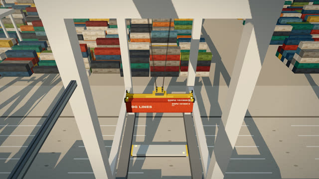
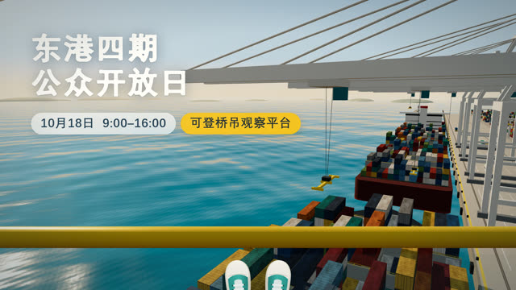
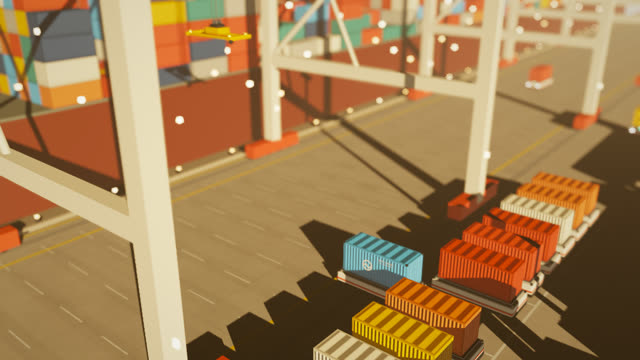
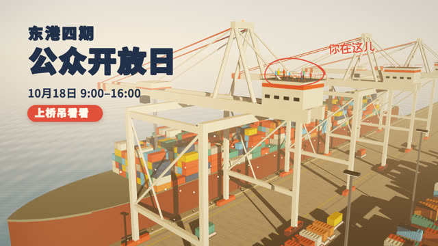
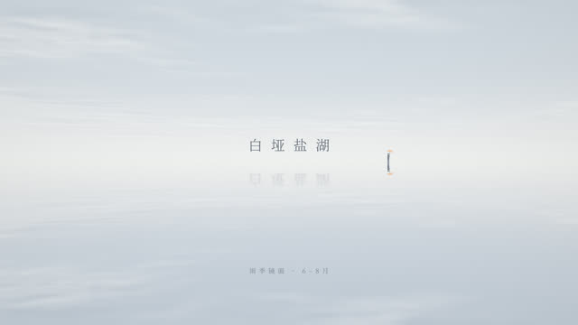
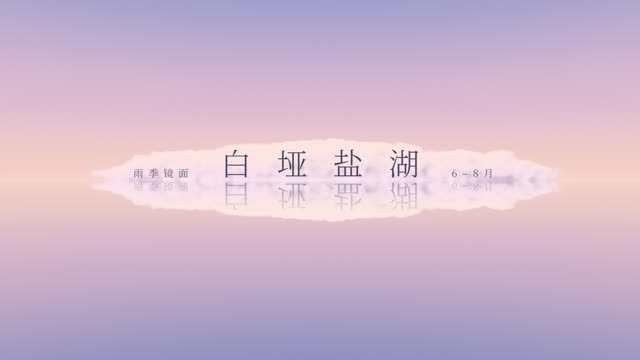
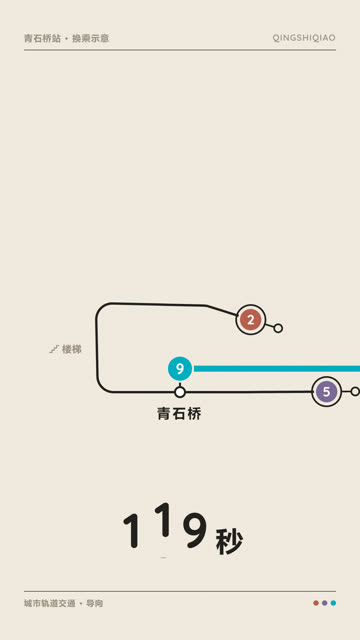
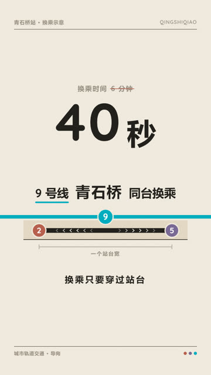
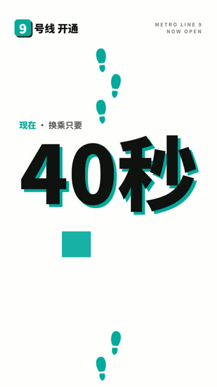
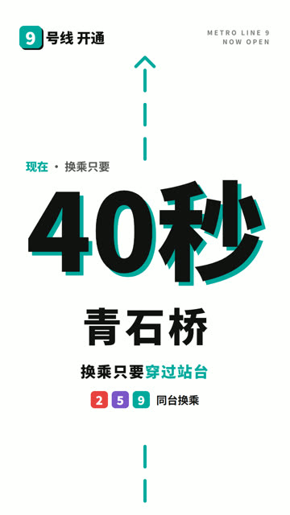

6 张你认为"视觉到位能到惊艳"的卡，交给无装备的 N0 builder，各做一次：只做设计、施工、自检，不进批评环，不过节奏刀。你看视频盲评，评审 agent 的输出在你锁定之后才打开。
只有 v05（D 收敛默认）是 4 分。执行差距：5 支为 0，1 支为 1。
兑现核对员逐张判定，主角和机制都没换。
低分片只有 1 支，三类来源都达不到"2 支低分片、跨 2 条 brief"。
每支 9.6–34.9 分钟，明显低于预估的 33–64 分钟。
每支两张图：中段的一帧和最后一帧。蓝框是你在这条 brief 上更喜欢的那支。


站在五十米高的桥吊观察平台上往下看，一只箱子在脚下被自动抓起，然后被送走。


开场像桌上的玩具：小桥吊夹起一只小箱子。镜头一路拉远才揭示桥吊有四十米高，人才是那个小点。

一条看不见的地平线把画面对折成两片天空，只有一滴雨落下的涟漪能证明，下半边其实是地面。

一朵孤云从天上缓缓下沉，倒影从湖里升起迎接，两者在地平线相触合一，云真的落到了地上。


把原来 6 分钟的绕行换乘路线画成一根松垮弯线，再像拉绳一样把它拉直，最后只剩一个站台宽。


屏上巨大的「6分钟」被一串脚印笔直踩过，字一路碎开又重组，脚印走到对面时它已变成「40秒」。
6 支里有 5 支质量 5 分（要求至少 4 支），这 5 支的核心机制都保留。在这 6 张卡上，默认执行已经能做到惊艳。成片分不等于想法分：这几张卡的想法分都是 4，执行把你在纸面上估的上限兑现了 5/6。
不进判定，但和票 12 的"时间总览"直接相关。描述员只看 6 张静帧加条带，它的标记和你看视频的打分对不上。
每秒运动量：相邻帧之间灰度变化超过 24 的像素占比，6 支共用同一个刻度（开方刻度，小运动也看得见）。v03 整支 12 秒都量成 0，实际上画面一直在缓慢下摇、云在流动；v04 中段有 4.4 秒量成静止。整体时间视觉化需要更长时间窗的差分。
为什么想法很少到 5 分？本轮说明，好想法交到默认执行手里就能做到惊艳，瓶颈在上游。管线里已经有分方向和 r1 挑选。
验收时可以留意 3D 场景里 hero 页的字。这是同 brief 重复观察，不是候选。
上面两节是新证据：只看帧的读者会把运动中途读成缺陷、把帧数读成时长，逐帧阈值又测不出慢运动。改不改由你定。
本轮只有 6 支片、一位评分者，卡是事先按"第二问 5 分"挑的，结论只适用于这 6 张卡。隔离审计：builder 和评审 agent 都是 LEAK 0。运维处理和偏离都记在结果文档 §7。